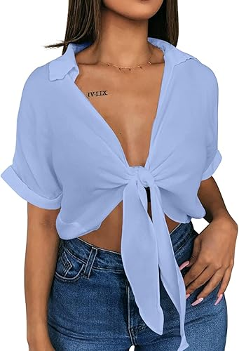

<INPUT TYPE=SUBMIT VALUE="Añadir producto al carrito" ></center>


<html>
<HEAD>
<Title>Ropa para mujer</tiTle>
<!autor: Damaris Menjivar>
</head>
<body BGCOLOR="pink">
<center><h1>Ropa para mujer</h1></center>
<HR WIDTH=70% SIZE=10% COLOR="purple">
<FONT SIZE=7 COLOR=black>
<center><UL TYPE="SQUARE"></center>
<Center><LH>Blusa de manga corta de verano.</LH></font></center>
<font size=5 color=blue>
<Center></center>
<center><Li> Material: poliéster, no elástico, ligero, cómodo y suave.</center>
<center><Li> Sexy cuello en V, manga corta, nudo de corbata, top corto, casual.</center>
<center><Li> Color celeste.</center>
<center><Li> US $19.99</center>
<center><Li>Instrucciones de cuidado del material: Lavar a mano, secar al sol. No lo pongas en la lavadora.</center>
<center><INPUT TYPE=CHECKBOX NAME= variable> Opción<br><br></center>
<center><INPUT TYPE=RADIO NAME= variable VALUE=Talla S >Talla S<BR></center>
<center><INPUT TYPE=RADIO NAME= variable VALUE=Talla M >Talla M<BR></center>
<center><INPUT TYPE=RADIO NAME= variable VALUE=Talla N >Talla N<BR></center>
<center><INPUT TYPE=RADIO NAME= variable VALUE=Talla XL>Talla L<BR></center>
</UL></font>
</BODY>
</HTML>


<FONT SIZE=7 COLOR=black>
<UL TYPE="Square">
<HR WIDTH=70% SIZE=10% COLOR="purple">
<Center><LH>Blusa casual formal de negocios.</LH></font></center>
<font size=5 color=blue>
<center></center>
<Li>Tela de satén: Están hechas de 95% poliéster y 5% elastano. Son camisas de seda satinada para estar cómodas y frescas.
<Li>Blusas para mujer elegante, casual y formal  para usar dentro del jeans o déjalas sueltas.
<Li> Color azul oscuro.
<Li> US $28.99
<Li>Instrucciones de cuidado del material: Lavar a máquina.
<br><INPUT TYPE=CHECKBOX NAME= variable> Opción<br><br></center>
<INPUT TYPE=RADIO NAME= variable VALUE=Talla S >Talla S<BR>
<INPUT TYPE=RADIO NAME= variable VALUE=Talla M >Talla M<BR>
<INPUT TYPE=RADIO NAME= variable VALUE=Talla N >Talla N<BR>
<INPUT TYPE=RADIO NAME= variable VALUE=Talla XL>Talla L<BR>
</UL></font>
</BODY>
</HTML>


<FONT SIZE=7 COLOR=black>
<center><UL TYPE="square"></center>
<HR WIDTH=70% SIZE=10% COLOR="purple">
<Center><LH>Jeans cargo de cintura alta, de pierna ancha con bolsillos.</LH></font></center>
<font size=5 color=blue>
<Center></center>
<center><Li>Tipo de tela: 78 % algodón, 22 % poliéster.</center>
<center><Li>Diseño único: cintura alta, pierna ancha y recta, cierre de cremallera, múltiples bolsillos y tela de mezclilla.</center>
<center><Li> Color azul/claro.</center>
<center><Li> US$25.00</center>
<center><Li>Instrucciones de cuidado del material: Lavar a máquina.</center>
<center><INPUT TYPE=CHECKBOX NAME= variable> Opción<br><br></center>
<center><INPUT TYPE=RADIO NAME= variable VALUE=Talla 6 >Talla S<BR></center>
<center><INPUT TYPE=RADIO NAME= variable VALUE=Talla 9>Talla M<BR></center>
<center><INPUT TYPE=RADIO NAME= variable VALUE=Talla 13>Talla N<BR></center>
<center><INPUT TYPE=RADIO NAME= variable VALUE=Talla 16>Talla L<BR></center>
</UL></font>
</BODY>
</HTML>


<FONT SIZE=7 COLOR=black>
<UL TYPE="square">
<HR WIDTH=70% SIZE=10% COLOR="purple">
<Center><LH>Falda elegante larga de cintura alta.</LH></font></center>
<font size=5 color=blue>
<Center></center>
<Li>Tipo de tela: 97% poliéster, 3% licra.
<Li>Cintura elástica trasera con cierre de cremallera. Diseño de nudo frontal. Por debajo de la rodilla. Silueta acampanada.
<Li> Color amarillo.
<Li> US$33.95
<Li>Instrucciones de cuidado del material: Lavar en frío por separado, no usar blanqueador.
<br><INPUT TYPE=CHECKBOX NAME= variable> Opción<br><br></center>
<INPUT TYPE=RADIO NAME= variable VALUE=Talla S >Talla S<BR>
<INPUT TYPE=RADIO NAME= variable VALUE=Talla M >Talla M<BR>
<INPUT TYPE=RADIO NAME= variable VALUE=Talla N >Talla N<BR>
<INPUT TYPE=RADIO NAME= variable VALUE=Talla XL>Talla L<BR>
</UL></font>
</body>
</html>

<center><A HREF="Parcial.html">REGRESO AL INICIO</A></center>